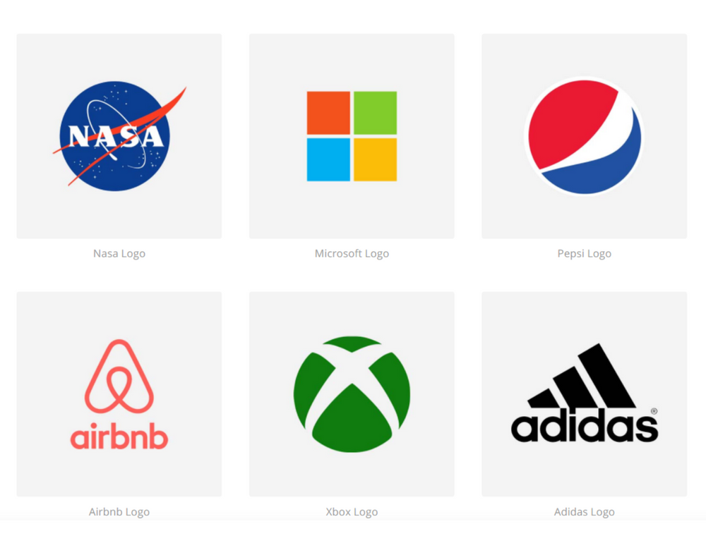

TRANG WEB VIẾT BẰNG CSS VÀ HTML |
||
|
Hôm nay là ngày 7 tháng 5 năm 2024. Hôm nay tôi học CSS và bây gời tôi đang thực hành tạo 1 trang web cho riêng mình bằng các kiến thức tôi đã học được trước đó. Tôi cảm thấy rất hứng thú và háo hức với việc áp dụng những kiến thức mới vào thực tế. Việc tạo ra một trang web từ đầu đến cuối không chỉ giúp tôi củng cố kiến thức mà còn giúp tôi thấy tự hào với bản thân vì đã đạt được một mục tiêu nhỏ trong hành trình học tập của mình. Tôi hy vọng rằng sau khi hoàn thành, trang web của tôi sẽ trở nên chuyên nghiệp và hấp dẫn đối với người xem. |
 | |
CẢM ƠN MỌI NGƯỜI ĐÃ XEM TRANG WEB NÀY.TUY HƠI LỎ NHƯNG MÀ CỨ PHẢI TỪ TỪ. |
||